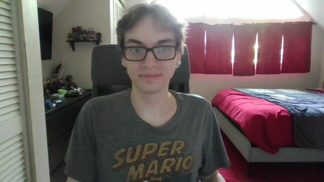

Greetings my name is Calen Kempton.

Here is a list of projects that I've worked on during my time at fidgetech.
I was born on july 3rd 2005, I have autism, I graduated High School from Connections Academy in 2023, and I've learned web development at Fidgetech. Some of my skills include:
Here are other stuff to know about me such as my hobbies, interests, etc.